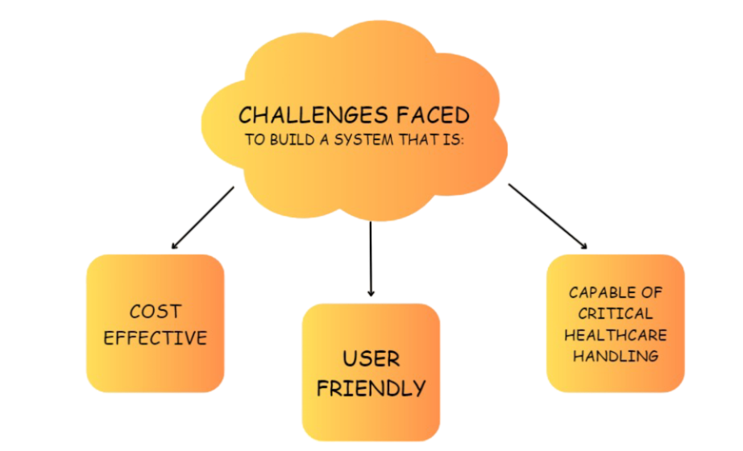

IoT-Based Patient Assistance System
An innovative approach to improving healthcare through technology.
Need Identification
Challenges
Customer Insights
Feedback from caregivers and elderly individuals highlighted the need for automated reminders and reduced dependency.
Existing Product Survey
Project Goals
Project Timeline
The project was executed in phases: Need Analysis, Solution Design, Manufacturing, and Testing.
Components Used
Material Selection
Subsystem Diagram
Geometric Modelling and Design Iterations
Various design iterations led to the creation of a reliable and compact dispensing mechanism.
Design Solution
The final design integrates mechanical precision with electronic reliability for seamless operation.

Engineering Analysis
Stress analysis and power calculations were performed to ensure system reliability and efficiency.
WebApp Integration
The system seamlessly integrates with a web application for remote monitoring and updates.
About Us
The project team includes students of Mechatronics Engineering, supervised by Dr. Sandeep Kumar Sharma and Dr. Vishal Gupta.
<